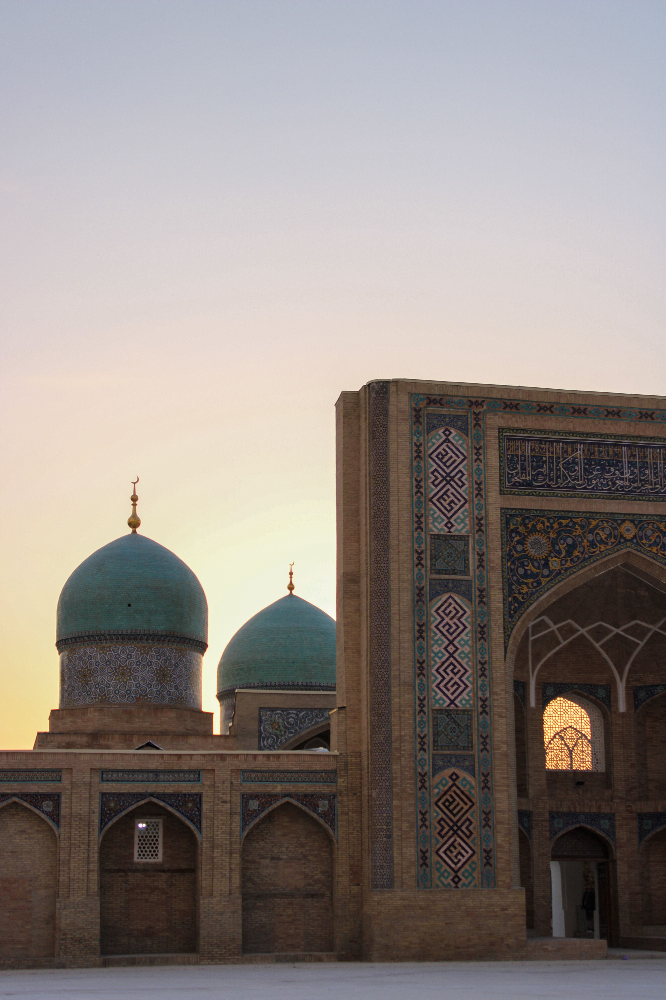

Tashkent · capitale
01 · La capitale
Tra passato e futuro
Tashkent sorprende con viali ampi, architetture monumentali e angoli che conservano il fascino dell'Asia centrale. È la porta d'ingresso a un viaggio che attraversa secoli di storia.